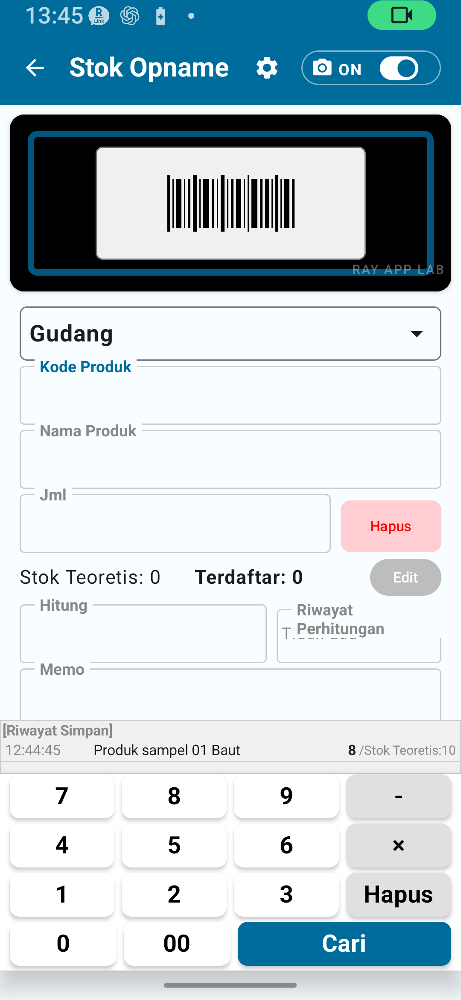

Ikhtisar Stok Opname Versi Gratis
Stok opname adalah operasi menghitung jumlah barang nyata di lokasi dan mencatatnya. Versi gratis memungkinkan Anda mencoba alur stok opname dasar.
Alur stok opname: Pindai produk → Input jumlah → Simpan → Periksa riwayat.
Fitur stok opname versi gratis
- Input atau pemindaian kode produk / barcode
- Input nama produk
- Input jumlah aktual
- Input catatan
- Melihat riwayat stok opname
- Menyimpan dan mengekspor dalam batas versi gratis

Batasan Versi Gratis
| Item | Batasan versi gratis | Cara menghapus |
|---|---|---|
| Data katalog | Maks. 30 | Versi Standar atau lebih tinggi |
| Catatan riwayat stok opname | Maks. 30 | Versi Standar atau lebih tinggi |
| Catatan yang diekspor | Maks. 30 | Versi Standar atau lebih tinggi |
| Kunci rotasi layar | Tidak tersedia | Versi Standar atau lebih tinggi |
| Pengaturan aturan kode detail | Tidak tersedia | Versi Lengkap |
| Pengaturan aturan lokasi detail | Tidak tersedia | Versi Lengkap |
| Pengaturan kamera detail | Tidak tersedia | Versi Lengkap |
| Ekspor CSV diperluas | Tidak tersedia | Versi Lengkap |
Stok Opname Langkah demi Langkah
- Di halaman Beranda, ketuk Stok Opname.
- Pindai barcode atau masukkan kode produk secara manual.
- Nama produk ditampilkan. Jika kode belum terdaftar, masukkan nama secara manual.
- Konfirmasi atau pilih lokasi (gudang, toko, dll.).
- Masukkan jumlah yang dihitung langsung.
- Masukkan catatan jika diperlukan.
- Ketuk Simpan untuk mencatat item ini di riwayat stok opname.
- Periksa apakah catatan sudah tersimpan di riwayat stok opname.

Input Barcode, Nama Produk, dan Jumlah
Pemindaian barcode
Buka kamera lalu arahkan ke barcode. Aplikasi akan membacanya secara otomatis. Jika pemindaian gagal, coba di tempat yang lebih terang atau gunakan input manual.
Input kode produk secara manual
Jika barcode tidak dapat digunakan, masukkan kode produk langsung ke kolom kode. Untuk kode yang sudah terdaftar, nama produk akan ditampilkan otomatis.
Input nama produk
Jika kode belum terdaftar, masukkan nama produk secara manual. Nama yang dimasukkan akan tercatat dalam riwayat stok opname. Perhatikan batas jumlah catatan jika bekerja tanpa data katalog yang sudah terdaftar.
Input jumlah aktual
Masukkan jumlah yang benar-benar dihitung di lokasi sebagai angka.
Input catatan
Anda dapat menulis catatan kerja atau komentar secara bebas. Catatan ini akan disimpan bersama riwayat stok opname.
| Kolom | Keterangan | Wajib / Opsional |
|---|---|---|
| Barcode / Kode produk | Kode yang digunakan untuk mengidentifikasi produk | Wajib |
| Nama produk | Dimasukkan secara manual jika kode belum terdaftar | Wajib secara kondisional |
| Lokasi | Tempat stok opname dilakukan | Tergantung pengaturan |
| Jumlah aktual | Jumlah yang benar-benar dihitung | Wajib |
| Catatan | Catatan kerja atau komentar | Opsional |
Pengelolaan Lokasi
| Mode stok opname | Lokasi yang tersedia | Contoh penggunaan |
|---|---|---|
| Sederhana A | Gudang saja | Pengelolaan satu gudang |
| Sederhana B | Gudang + Toko | Stok Opname di gudang dan toko sekaligus |
| Sederhana C | Toko saja | Pengelolaan satu toko |
Melihat Riwayat Stok Opname
Semua item stok opname yang tersimpan dapat dilihat di riwayat: tanggal/waktu penyimpanan, kode dan nama produk, jumlah nyata, lokasi, dan catatan.
Batasan Ekspor CSV
| Item | Versi gratis | Versi Standar | Versi Lengkap |
|---|---|---|---|
| Catatan yang diekspor | Maks. 30 | Maks. 300 | Tidak terbatas |
| Ekspor kolom lengkap | Terbatas | Terbatas | Ekspor CSV diperluas |
Yang Tidak Bisa Dilakukan di Versi Gratis
| Fitur | Paket yang diperlukan |
|---|---|
| Lebih dari 30 data katalog | Stok Opname Versi Standar atau lebih tinggi |
| Lebih dari 30 catatan riwayat | Stok Opname Versi Standar atau lebih tinggi |
| Ekspor lebih dari 30 catatan | Stok Opname Versi Standar atau lebih tinggi |
| Kunci rotasi layar | Stok Opname Versi Standar atau lebih tinggi |
| Pengaturan aturan kode/lokasi detail | Stok Opname Versi Lengkap |
| Pengaturan kamera detail | Stok Opname Versi Lengkap |
| Ekspor CSV diperluas | Stok Opname Versi Lengkap |
| Menerapkan hasil stok opname ke stok | Stok Opname Versi Lengkap |
Alur Kerja yang Direkomendasikan untuk Pengguna Gratis
Dengan 30 produk atau kurang, versi gratis sudah cukup untuk stok opname dasar yang berkelanjutan. Ekspor ke CSV sebelum mendekati batas 30 catatan riwayat untuk mengarsipkan catatan Anda.
- Anda memiliki lebih dari 30 produk
- Ingin menyimpan riwayat stok opname bulanan jangka panjang
- Perlu mengunci orientasi layar saat bekerja di lapangan
- Memiliki kurang dari 300 produk dan ingin terus melakukan stok opname
📌 Poin Utama Bab Ini
- Stok opname versi gratis cocok untuk operasi kecil dengan maksimal 30 item.
- Alurnya: Pindai → Input jumlah → Simpan → Periksa riwayat.
- Lokasi dikonfigurasi dengan mode Sederhana A/B/C. Lokasi detail memerlukan Versi Lengkap.
- Ekspor CSV terbatas 30 catatan dan tidak menyertakan kolom tanggal atau lokasi.
- Jika mendekati batas 30 catatan, pertimbangkan untuk beralih ke Versi Standar atau Versi Lengkap.
- Stok Opname dan Manajemen Stok adalah modul terpisah — jangan dicampuradukkan.
🔍 Catatan sebelum digunakan
- Pastikan kode produk, nama produk, lokasi, dan jumlah sudah benar sebelum menyimpan.
- Jika perlu mengubah data setelah disimpan, ikuti panduan yang tampil di layar aplikasi.
- Jika mendekati batas 30 catatan, ekspor CSV atau pertimbangkan untuk beralih ke Versi Standar atau Versi Lengkap.
- Untuk harga, ketersediaan, dan syarat pembelian, ikuti informasi yang tampil di Google Play.